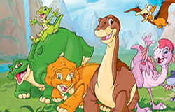

A traveller/explorer "du dimanche" and a strategy consultant.
Mostly, a coding enthusiastic kid, eager to acquire knowledge and meet other creative coders!
|  |
Le Petit Dinosaure"Petit Pied est sérieux, honnête et enthousiaste. Il est peut être petit maintenant, mais il va se développer jusqu'à devenir l'un des plus grands dinosaures de tous." Céra, amie tricératops |
Le bus magique"À bord de notre bus pas comme les autres, Mlle Bille-en-Tête l'instit et sa classe vivent des aventures extraordinaires." Liz, caméléon de la classe |
|
Les Kangoo Junior"Nous, les Kangoo Juniors excellons en tant que joueurs de basket-ball. Nos pires ennemis sont la Bande des Cinq qui étudient dans la petite école de School Island." Napo, capitaine de l'équipe |